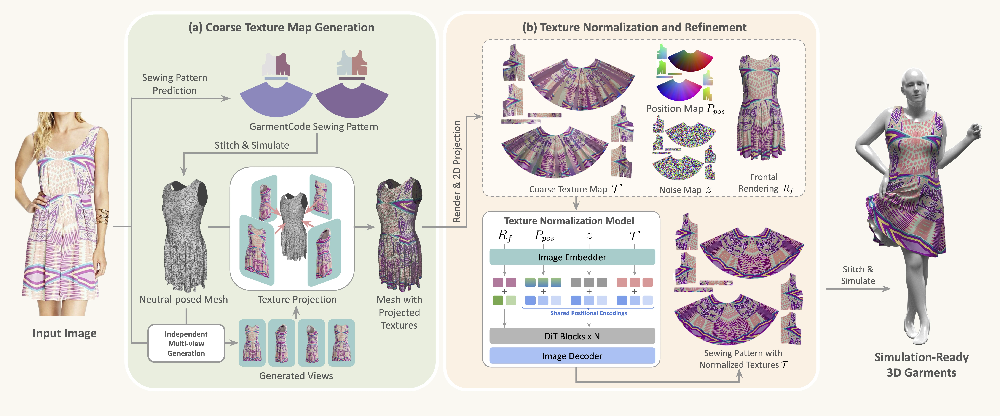

Overview
Given in-the-wild images of apparels, OmniFabric synthesizes simulation-ready 3D garments with textures free from distortions and baked-in artifacts like shadows and wrinkles.
Method
Given a reference clothing image, OmniFabric first generates a roughly textured mesh by projecting generated multi-views onto a predicted garment mesh. Then, a texture normalization model rectifies distortions and removes baked-in artifacts like shadows and wrinkles on the sewing pattern UV maps. The synthesized textured sewing pattern can be directly put into any existing engine for simulation under diverse lightings and dynamics.

Interactive Display
Explore the synthesized garments directly in 3D and compare each interactive result with its reference image.
Single-Garment Reconstruction
Composed Outfit Reconstruction
BibTeX & Acknowledgments
Acknowledgments
We use CLO3D for all the garment simulations in this work and use Blender to render garment animations.